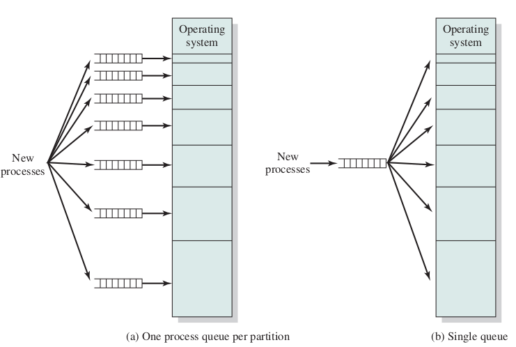
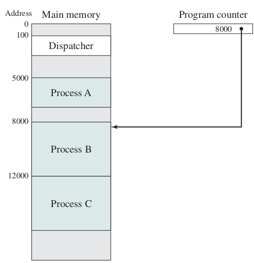
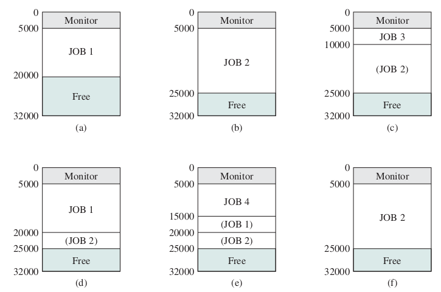
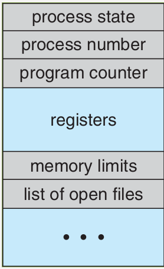
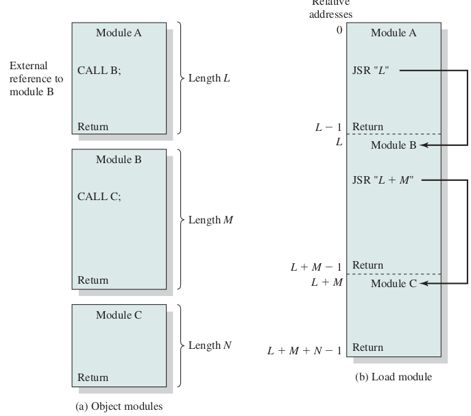
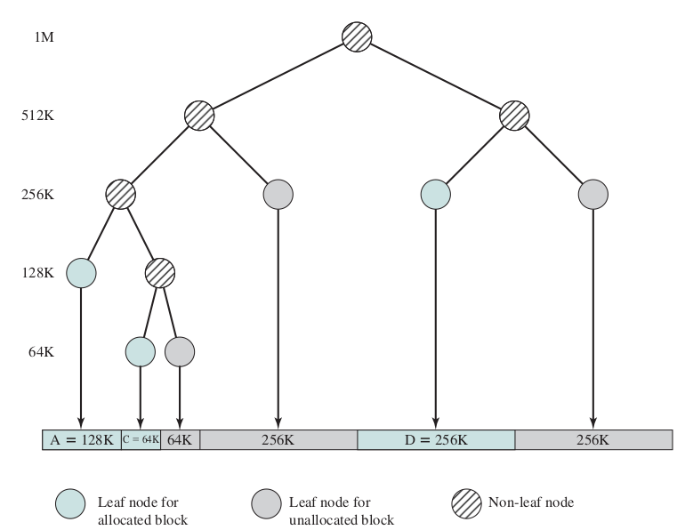
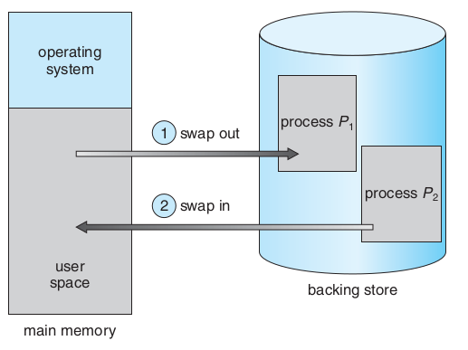
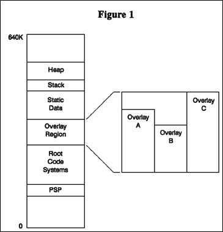
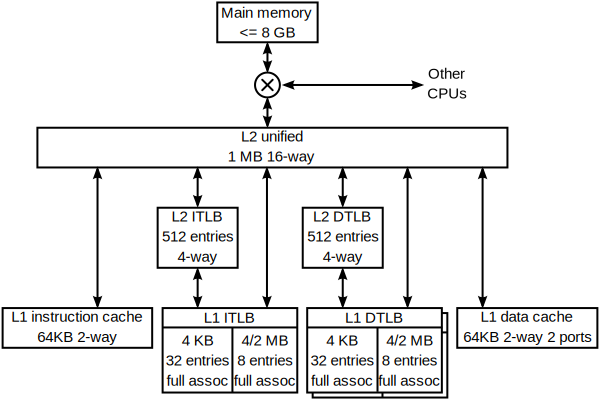

Operating Systems
Memory Management
Ahmad Yoosofan
University of Kashan

تخصیص حافظه به فرآیندها در حالت بخشبندی ثابت حافظه
مشکلات بخشبندی ثابت
- انعطاف بسیار پایین
- محدودیت زیاد برای اندازهٔ فرایند در حالی که فضای حافظه خالی است.
- تکه تکه شدن یا پراکندی داخلی internal fragmentation
- هدر رفت حافظه
- بخشی از حافظه که به فرایند داده شده است فقط برای آن فرایند است.
- یعنی اگر بخشی از آن را فرایند به کار نبرد هدر رفته است.
تکه تکه شدن (پراکندگی) داخلی حافظه
Internal Memory Fragmentation

https://www.geeksforgeeks.org/difference-between-internal-and-external-fragmentation/
بخشبندی پویای حافظه
حافظهٔ فرآیندها در سیستم عامل CTSS
اثر به کارگیری حافظهٔ پویا


Process Control Block (PCB)

چگونگی کارکرد پیوند زدن تابعها از پروندههای گوناگون
Queue

برگزیدن فضای آزاد برای فرآیند تازه وارد
- اولین برازش(First Fit)
- بهترین برازش(Best Fit)
- بدترین برازش(Worst Fit)
- درپی برازش (برازش بعدی Next Fit)

تکه تکه شدن (پراکندگی یا پارگی) خارجی
External Fragmentation
Compaction

حافظهٔ پویای رفاقتی Buddy system
الگوریتم اجرا

Process Suspension

overlay
سلسله مراتب حافظه

سلسله مراتب حافظه جزئیتر

حافظهٔ نهان
حافظهٔ نهان دو سطحی در یک پردازندهٔ واقعی

الگوریتم خواندن و نوشتن از حافظهٔ نهان

Effective Access Time (EAT)
- \(t_m\) : زمان دسترسی به حافظهی اصلی
- \(t_c\) : زمان دسترسی به حافظهی نهان
- \(h_c\) : ضریب اصابت به حافظهی نهان
اگر ضریب اصابت (یا نسبت اصابت) برای پردازندهای 0.95 باشد و سرعت دسترسی به حافظهٔ اصلی 100 میکرو ثانیه باشد و سرعت دسترسی حافظهٔ نهان 1 میکرو ثانیه باشد در این صورت زمان دسترسی مؤثر برابر خواهد بود با
- EAT = 0.95 * 1 + (1 − 0.95) * (100 + 1)
- EAT = 0.95 + 0.05 * 101
- EAT = 0.95 + 5.05
- EAT = 6 μs

| ms | μs | ns | action |
| 0.5 | CPU L1 dCACHE reference | ||
| 1 | speed-of-light (a photon) travel a 1 ft (30.5cm) distance | ||
| 5 | CPU L1 iCACHE Branch mispredict | ||
| 7 | CPU L2 CACHE reference | ||
| 71 | CPU cross-QPI/NUMA best case on XEON E5-46 | ||
| 100 | MUTEX lock/unlock | ||
| 100 | own DDR MEMORY reference | ||
| 20 | 000 | Send 2K bytes over 1 Gbps NETWORK | |
| 250 | 000 | Read 1 MB sequentially from MEMORY | |
| 10 | 000 | 000 | DISK seek |
| 10 | 000 | 000 | Read 1 MB sequentially from NETWORK |
| 30 | 000 | 000 | Read 1 MB sequentially from DISK |
| 150 | 000 | 000 | Send a NETWORK packet CA -> Netherlands |


بخشهای درونی یک فرآیند در حالت کلی

مشخص شدن آدرسهای حافظهٔ فرآیند


address binding, loader

address binding, linker

Stack
- Process stack
- System stack
Micro Kernel

Multi Layer

DMA


END
References(I)
- https://stackoverflow.com/questions/18550370/calculate-the-effective-access-time
- http://os-book.com/
- https://en.wikipedia.org/wiki/Paging
- https://en.wikipedia.org/wiki/Page_(computer_memory)
- http://blog.cs.miami.edu/burt/2012/10/31/virtual-memory-pages-and-page-frames/
- https://www.tldp.org/LDP/tlk/mm/memory.html
- https://www.cse.iitb.ac.in/~mythili/teaching/cs347_autumn2016/notes/07-memory.pdf
References(II)
- https://www.kernel.org/doc/html/latest/admin-guide/mm/index.html
- https://www.geeksforgeeks.org/operating-system-paging/
- https://samypesse.gitbooks.io/how-to-create-an-operating-system/Chapter-8/
- https://www.javatpoint.com/os-segmented-paging
- https://www.geeksforgeeks.org/difference-between-internal-and-external-fragmentation/
- https://web.fe.up.pt/~arestivo/presentation/os-memory/#15
- https://binaryterms.com/contiguous-memory-allocation-in-operating-system.html
- https://github.com/mor1/ia-operating-systems/wiki/06-Virtual-Addressing
References(III)
- https://github.com/mor1/ia-operating-systems
- https://www.faceprep.in/operating-systems/operating-systems-fragmentation-and-compaction/
- https://slideplayer.com/slide/7084682/
- https://www.cs.uic.edu/~jbell/CourseNotes/OperatingSystems/images/Chapter1/1_4_StorageDeviceHierarchy.jpg
- http://images.bit-tech.net/content_images/2007/11/the_secrets_of_pc_memory_part_1/hei.png
- https://en.wikipedia.org/wiki/Cache_(computing)
- https://www.byclb.com/TR/Tutorials/dsp_advanced/ch1_1_dosyalar/image025.jpg
- https://en.wikipedia.org/wiki/File:Cache,hierarchy-example.svg
- https://en.wikipedia.org/wiki/CPU_cache
- https://tutorialspoint.dev/image/Translation.png
{kind=link}
{kind=link}
{kind=link}
{kind=link}
{kind=link}
References(IV)
- https://www.cs.princeton.edu/courses/archive/spr11/cos217/lectures/18MemoryMgmt.pdf
- http://harmanani.github.io/classes/csc320/Notes/ch05.pdf
- https://www.cs.princeton.edu/courses/archive/spr11/cos217/lectures/18MemoryMgmt.pdf
- http://harmanani.github.io/classes/csc320/Notes/ch05.pdf
- https://www.gatevidyalay.com/translation-lookaside-buffer-tlb-paging/
- https://www.amazon.com/ASUS-DDR3-Intel-Motherboard-H61M/dp/B00BN36V4W
- https://www.asus.com/Motherboards-Components/Motherboards/Workstation/P10S-WS/
- https://commons.wikimedia.org/wiki/File:Intel_D945GCCR_Socket_775.png
{kind=link}
References(V)
- https://witscad.com/course/computer-architecture/chapter/dma-controller-and-io-processor
- https://www.uou.ac.in/lecturenotes/computer-science/BCA-17/Computer%20Organization%20Part%202.pdf
- https://www.pvpsiddhartha.ac.in/dep_it/lecturenotes/CSA/unit-5.pdf
- https://toshiba.semicon-storage.com/us/semiconductor/knowledge/e-learning/micro-intro/chapter4/interrupt-processing-types-interrupts.html
- https://stackoverflow.com/questions/4087280/approximate-cost-to-access-various-caches-and-main-memory#4087315
- https://codex.cs.yale.edu/avi/os-book/